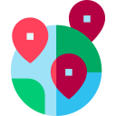

<!-- Main navigation container -->
<nav
  class="relative flex w-full flex-wrap items-center justify-between bg-zinc-50 py-2 shadow-dark-mild dark:bg-neutral-700 lg:py-4"
  data-twe-navbar-ref
>
  <div class="flex w-full flex-wrap items-center justify-between px-3">
    <div>
      <a class="mx-2 my-1 flex items-center lg:mb-0 lg:mt-0" routerLink="/home">
        
      </a>
    </div>

    <!-- Hamburger button for mobile view -->
    <button
      class="block border-0 bg-transparent px-2 text-black/50 hover:no-underline hover:shadow-none focus:no-underline focus:shadow-none focus:outline-none focus:ring-0 dark:text-neutral-200 lg:hidden"
      type="button"
      data-twe-collapse-init
      data-twe-target="#navbarSupportedContent4"
      aria-controls="navbarSupportedContent4"
      aria-expanded="false"
      aria-label="Toggle navigation"
    >
      <!-- Hamburger icon -->
      <span
        class="[&>svg]:w-7 [&>svg]:stroke-black/50 dark:[&>svg]:stroke-neutral-200"
      >
        <svg
          xmlns="http://www.w3.org/2000/svg"
          viewBox="0 0 24 24"
          fill="currentColor"
        >
          <path
            fill-rule="evenodd"
            d="M3 6.75A.75.75 0 013.75 6h16.5a.75.75 0 010 1.5H3.75A.75.75 0 013 6.75zM3 12a.75.75 0 01.75-.75h16.5a.75.75 0 010 1.5H3.75A.75.75 0 013 12zm0 5.25a.75.75 0 01.75-.75h16.5a.75.75 0 010 1.5H3.75a.75.75 0 01-.75-.75z"
            clip-rule="evenodd"
          />
        </svg>
      </span>
    </button>

    <!-- Collapsible navbar container -->
    <div
      class="!visible mt-2 hidden flex-grow basis-[100%] items-center lg:mt-0 lg:!flex lg:basis-auto"
      id="navbarSupportedContent4"
      data-twe-collapse-item
    >
      <!-- Left links -->
      <ul
        class="list-style-none me-auto flex flex-col ps-0 lg:mt-1 lg:flex-row"
        data-twe-navbar-nav-ref
      >
        <!-- Home link -->
        <li class="my-4 ps-2 lg:my-0 lg:pe-1 lg:ps-2" data-twe-nav-item-ref>
          <a
            class="text-black/60 transition duration-200 hover:text-black/80 hover:ease-in-out focus:text-black/80 active:text-black/80 motion-reduce:transition-none dark:text-white/60 dark:hover:text-white/80 dark:focus:text-white/80 dark:active:text-white/80 lg:px-2"
            aria-current="page"
            href="#"
            data-twe-nav-link-ref
            >Unilocal</a
          >
        </li>
      </ul>

      <div class="flex items-center">
        <button
          type="button"
          data-twe-ripple-init
          data-twe-ripple-color="light"
          class="me-3 inline-block rounded px-2 pb-2 pt-2.5 text-xs font-medium uppercase leading-normal text-primary hover:text-primary-600 focus:text-primary-600 focus:outline-none focus:ring-0 active:text-primary-700 dark:text-secondary-600 dark:hover:text-secondary-500 dark:focus:text-secondary-500 dark:active:text-secondary-500"
        >
          <a href="" routerLink="/home">Home</a>
        </button>
        <button
          *ngIf="!userLoginOn"
          type="button"
          data-twe-ripple-init
          data-twe-ripple-color="light"
          class="me-3 inline-block rounded px-2 pb-2 pt-2.5 text-xs font-medium uppercase leading-normal text-primary hover:text-primary-600 focus:text-primary-600 focus:outline-none focus:ring-0 active:text-primary-700 dark:text-secondary-600 dark:hover:text-secondary-500 dark:focus:text-secondary-500 dark:active:text-secondary-500"
        >
          <a href="" routerLink="/login">Login</a>
        </button>
        <button
          *ngIf="!userLoginOn"
          type="button"
          data-twe-ripple-init
          data-twe-ripple-color="light"
          class="me-3 inline-block bg-blue-600 rounded px-2 pb-2 pt-2.5 text-xs font-medium uppercase leading-normal text-primary-50 hover:text-primary-600 hover:bg-blue-400 focus:text-primary-600 focus:outline-none focus:ring-0 active:text-primary-700 dark:text-secondary-600 dark:hover:text-secondary-500 dark:focus:text-secondary-500 dark:active:text-secondary-500"
        >
          <a href="" routerLink="/register">Sign-up</a>
        </button>
        <button
          *ngIf="userLoginOn"
          type="button"
          data-twe-ripple-init
          data-twe-ripple-color="light"
          class="me-3 inline-block rounded bg-primary px-6 pb-2 pt-2.5 text-xs font-medium uppercase leading-normal text-black shadow-primary-3 transition duration-150 ease-in-out hover:bg-primary-accent-300 hover:shadow-primary-2 focus:bg-primary-accent-300 focus:shadow-primary-2 focus:outline-none focus:ring-0 active:bg-primary-600 active:shadow-primary-2 motion-reduce:transition-none dark:shadow-black/30 dark:hover:shadow-dark-strong dark:focus:shadow-dark-strong dark:active:shadow-dark-strong"
        >
          <a routerLink="/home">Cerrar Sesion</a>
        </button>
        <button
          type="button"
          data-twe-ripple-init
          data-twe-ripple-color="light"
          class="me-3 inline-block rounded px-2 pb-2 pt-2.5 text-xs font-medium uppercase leading-normal text-primary hover:text-primary-600 focus:text-primary-600 focus:outline-none focus:ring-0 active:text-primary-700 dark:text-secondary-600 dark:hover:text-secondary-500 dark:focus:text-secondary-500 dark:active:text-secondary-500"
        >
          <a href="" routerLink="/map">Ver Mapa</a>
        </button>
      </div>
    </div>
  </div>
</nav>
